- 题目1： bfs的两种方法
- 题目2： 锯齿状遍历
- 题目3： 最大特殊宽度
- 题目4.1： 最大深度
- 题目4.2：最小深度
- 题目5： 先序遍历序列化和反序列化
- 题目6： 层序遍历序列化和反序列化
- 题目7： 先序遍历和中序遍历还原二叉树
- 题目8： 判断完全二叉树
- 题目9： 求完全二叉树节点个数
- 题目10: 普通二叉树上求解LCA
- 题目11：搜索二叉树上求解LCA
- 题目12：收集累加和为
k的所有路径- 题目13：判断平衡二叉树
- 题目14：判断搜索二叉树
- 题目15：修剪搜索二叉树
- 题目16：二叉树上的打家劫舍问题
二叉树的基本概念
深度与高度
节点的高度(height):从根节点到该节点经过的边数。 二叉树的深度(depth):从距离该节点最远的叶节点到该节点所需要经过的边树。 注意，不同的题、教材对于根叶节点的高度、深度从0还是从1开始并不统一。 但一般而言，说根节点的深度为0，叶子节点的高度为0。二叉树的层序遍历
题目1： bfs的两种方法
主要介绍使用队列一次遍历一层的解法
| 算法图解 | 解释 |
|---|---|
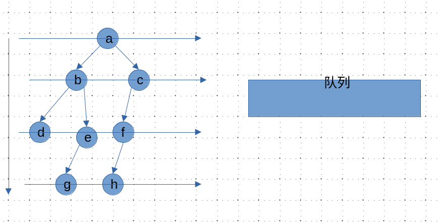 |
从根节点开始遍历 创建一个和节点个数一样多的队列 |
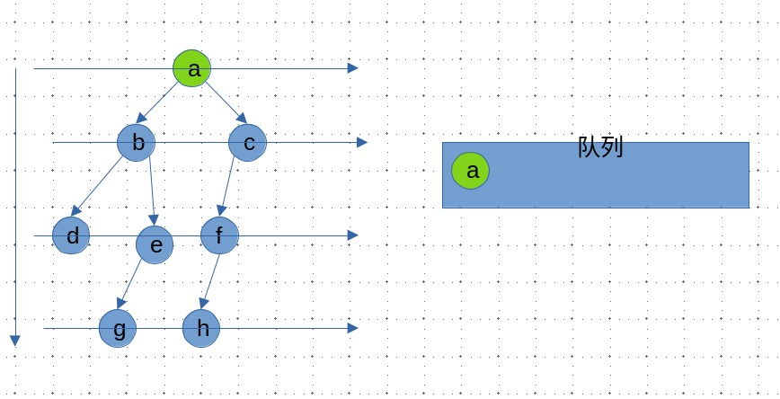 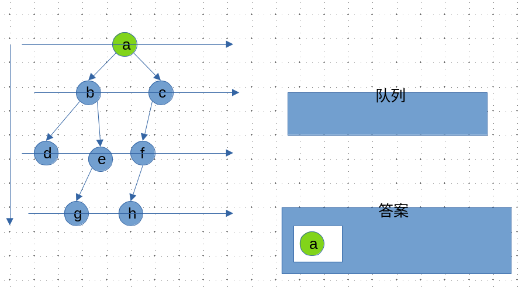 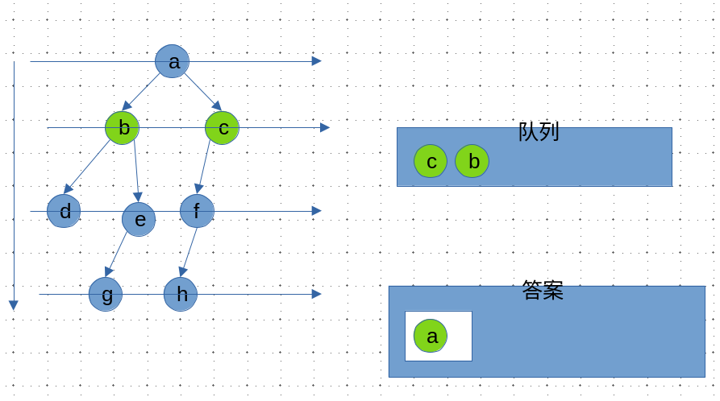 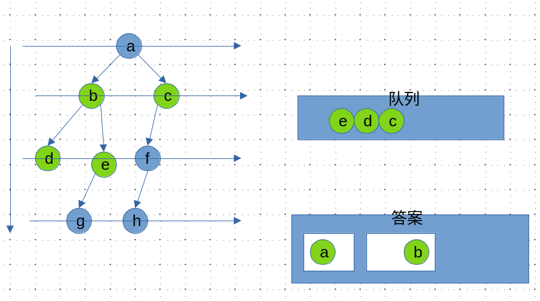 |
首先将根节点加入队列，同时记录队列的长度 执行 n次如下操作，n为上一步记录的长度1. 弹出队尾元素，加入这一层的答案数组中 2. 有左孩子则把左孩子加入队列 3.有右孩子则把右孩子加入队列 |
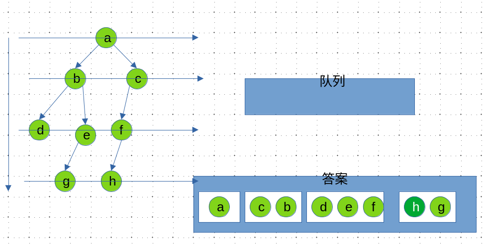 |
对于算法竞赛或者面试一般不是用库自带的队列，而是用数组模拟队列，具体看[入门]阶段的课程。
锯齿形层序遍历
这道题和上一道题思路上一致，只是需要注意每轮左右子树的加入顺序要交替
方法一：完全按照上题的做法，只是在读入答案的时候判断一下是从左往右的读还是从右往左读，如果是从右往左读，就反转一下list数组，其他什么都不需要改
// false 表示 从左 往右读入
// true 表示 从右往左读入
bool flag = false;
......;
if (flag) reserve(list.begin(), list.end());
flag = !flag;
ans.push_back(list);
方法二：先收集list再把左右节点加入队列
// reverse == false, 左 -> 右， l....r-1, 收集size个
// reverse == true, 右 -> 左， r-1....l, 收集size个
// 左 -> 右, i = i + 1
// 右 -> 左, i = i - 1
for (int i = reverse ? r - 1 : l, j = reverse ? -1 : 1, k = 0; k < size; i += j, k++) {
list.push_back(q[i]->val);
}
// 加入左右节点
最大特殊宽度
前序遍历的序列化和反序列化
序列化是将一个数据结构或者对象转换为连续的比特位的操作，进而可以将转换后的数据存储在一个文件或者内存中，同时也可以通过网络传输到另一个计算机环境，采取相反方式重构得到原数据。
二叉树的前序和后序都可以完成序列化但中序并不能唯一确定！
操作倒是简单这道题感觉不是算法题是coding能力测试题
- 对该二叉树进行一次先序遍历
- 对于非空节点
x记录其为字符串x, - 对于空节点记录为
#, - 注意某一节点若其左右子树为空也需要记录为
#,
| 算法图解 | 解释 |
|---|---|
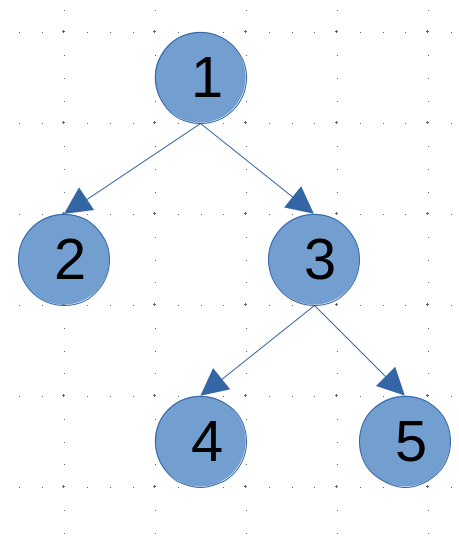 |
|
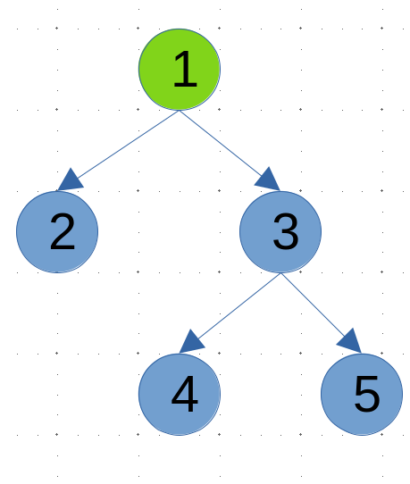 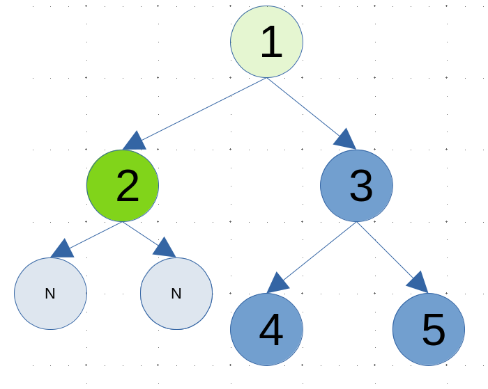 |
记录1为 1, 记录 2为2,同时记录其子结点为#, #, |
| 其余节点同理处理即可 最终字符串为 1,2,#,#,3,4,#,#,5,#,#反序列化就比较简单了遍历上述字符串即可 |
// 感觉这道题考语法？
class Codec {
public:
// Encodes a tree to a single string.
string serialize(TreeNode* root) {
if (!root) return "# ";
return to_string(root->val) + " " + serialize(root->left) + serialize(root->right);
}
// Decodes your encoded data to tree.
TreeNode* deserialize(string data) {
istringstream iss(data); // 使用字符串流简化解析
return buildTree(iss);
}
private:
TreeNode* buildTree(istringstream &iss) {
string val;
iss >> val; // 自动跳过空格
if (val == "#") return nullptr;
TreeNode* node = new TreeNode(stoi(val)); // 处理多位数
node->left = buildTree(iss);
node->right = buildTree(iss);
return node;
}
};
层序遍历的序列化和反序列化
通过先序遍历和中序遍历复原二叉树
这个题的知识点倒是考研经常会考的:joy:
关键思路
- 通过
前序遍历确定根节点 - 通过
中序遍历确定左右子树 - 递归这个过程就能还原出原二叉树
这道题的关键是理解这个边界图
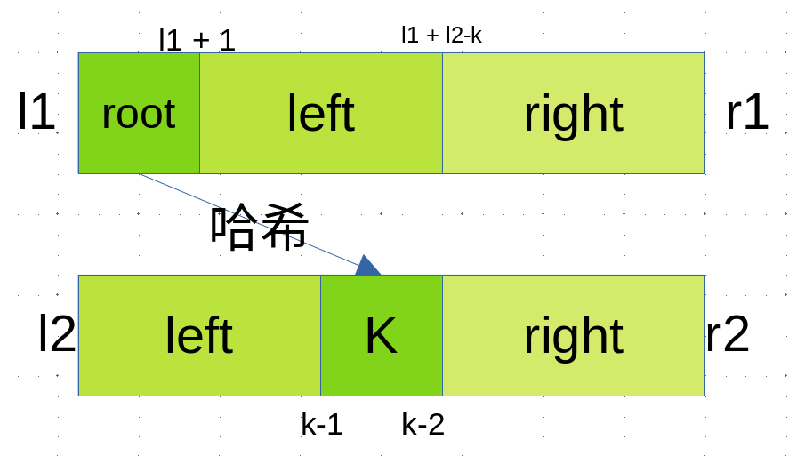
| 算法图解 | 解释 |
|---|---|
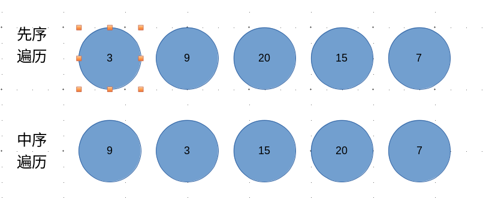 |
先序:3 9 20 15 7中序: 9 3 15 20 7 |
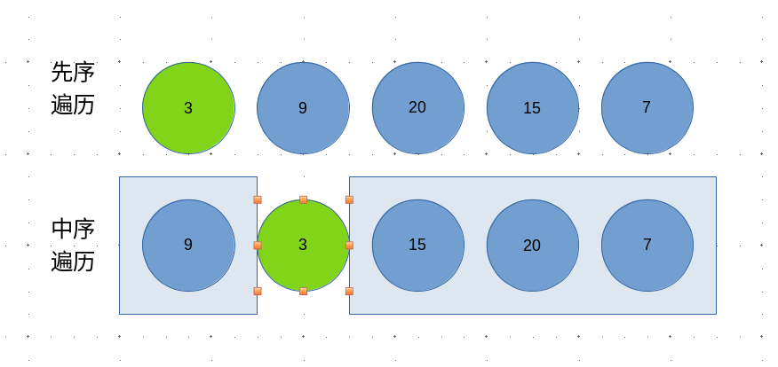 |
首先通过先序遍历找到整颗树的根3同时在中序中找到对应的节点 其左边就是左子树 9右边就是右子树 15 20 7 |
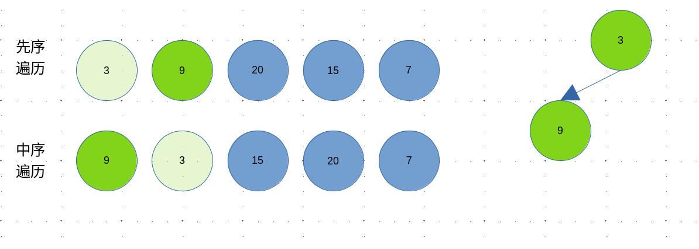 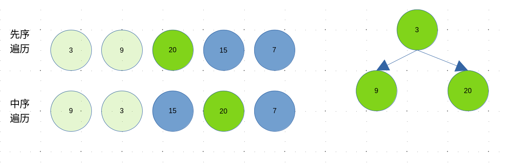 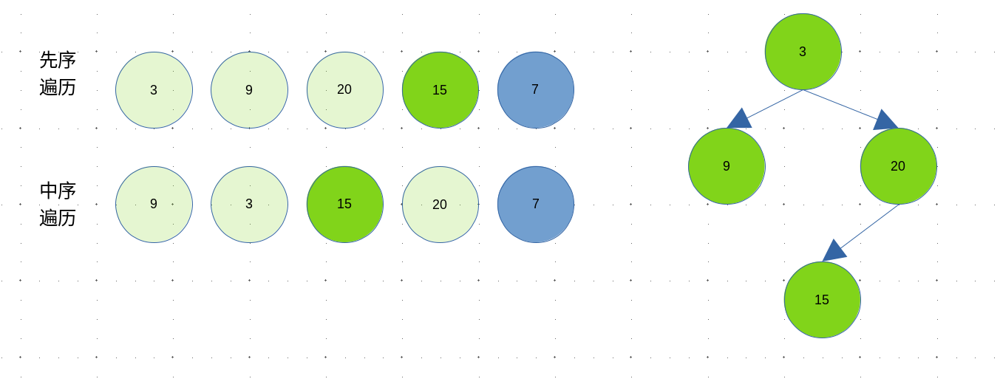 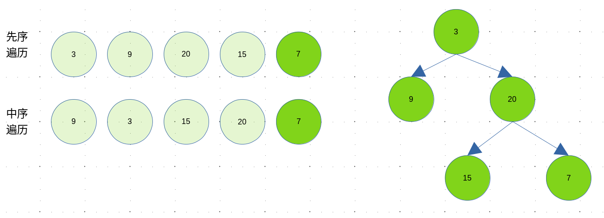 |
然后递归处理左右子树 |
判断完全二叉树
算法步骤
-
使用
层序遍历 - 如果一个节点左右子树齐全，则无需处理遍历下一个即可
- 如果一个节点有右子树，而左子树缺失则直接返回
false - 如果一个节点缺少右孩子，则记录之，遍历之后的节点
- 如果之后遍历的节点不全为叶子节点，则返回
false - 否则 返回
true
完全二叉树的节点个数
如果不考虑任何特性，遍历一边二叉树经过O(N) 的时间就能获得答案，所以这道题的难度为Easy。但人肯定还是得有点追求的啦，如何在< O(N)的时间内获得节点数目呢？
考虑完全二叉树的特性
- 一个完全二叉树，必然是由一个
满二叉子树和一个完全二叉子树或满二叉子树构成
具体算法图解如下
| 算法图解 | |
|---|---|
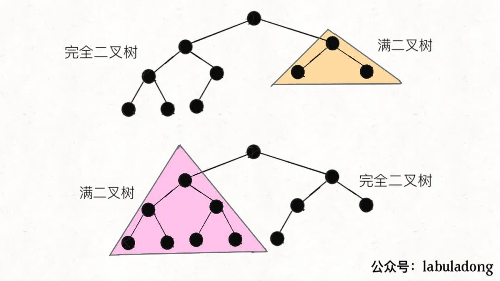 |
对于当前节点，检查其右子树的最左节点是否能到达整棵树的最底层 如果可以，说明左子树是满二叉树，直接计算左子树节点数(2^(h-level))，然后递归处理右子树 如果不可以，说明右子树是满二叉树(但少一层)，直接计算右子树节点数(2^(h-level-1))，然后递归处理左子树 |
由于是递归算法还是比较抽象的！
普通二叉树求LCA问题
LCA问题(Lowest Common Ancestor， 最近公共祖先)
其中最近公共祖先的定义为：“对于有根树 T 的两个节点 p、q，最近公共祖先表示为一个节点 x，满足 x 是 p、q 的祖先且 x 的深度尽可能大（一个节点也可以是它自己的祖先）。”
分类讨论
p或者q包含于另一颗树中- 则为
p或者q（父节点）
- 则为
p和q分属于两颗树
这道题看答案确实很好理解，但自己想可能就要费老鼻子力气了….
算法思路
- 如果当前节点是
p或者q或者空则返回该节点 - 否则递归遍历该节点的左右子树
- 如果左子树返回了
nullpter，则返回右子树的结果 - 反正若右子树返回了
nullpter则返回左子树的结果 - 如果都非空则当前节点是
p、q的最近公共祖先
class Solution {
public:
TreeNode* lowestCommonAncestor(TreeNode* root, TreeNode* p, TreeNode* q) {
// 如果找到p、q或者节点为空则返回
if (root == nullptr || root == p || root == q) return root;
// 左树遍历结果
TreeNode *l = lowestCommonAncestor(root->left, p, q);
// 右树遍历结果
TreeNode *r = lowestCommonAncestor(root->right, p, q);
// 左右子树各有p或者q，则当前节点为公共祖先
if (l != nullptr && r != nullptr) return root;
// 左右子树都没找到，返回空
if (l == nullptr && r == nullptr) return nullptr;
// 否则，返回p或者q对应情况1
return l != nullptr ? l : r;
}
};
搜索二叉树的LCA问题
搜索二叉树
平衡二叉树 中序遍历有序的树
和上一道题一样，但这里可以利用其左子树<根节点<右子树的特性，一次筛选出不少点。
- 如果
root == p或者root == q则直接就是答案 - 如果
root.val > max(p.val, q.val)p和q必然位于root->left中 - 如果
root.val < min(p.val, q.val)p和q必然位于root->right中 - 如果
root.val位于p.val和q.val直接，则直接返回root为答案
class Solution {
public:
TreeNode* lowestCommonAncestor(TreeNode* root, TreeNode* p, TreeNode* q) {
while (root->val != p->val && root->val != q->val) {
if (min(p->val, q->val) < root->val && root->val < max(p->val, q->val)) break;
root = root->val < min(p->val, q->val) ? root->right : root->left;
}
return root;
}
};
收集路径和为k的路径
题目
class Solution {
public:
vector<vector<int>> pathSum(TreeNode* root, int targetSum) {
if (root == nullptr) return {};
target = targetSum;
dfs(root, 0);
return ans;
}
private:
vector<int> path;
vector<vector<int>> ans;
int target = 0;
void dfs(TreeNode *root, int sum) {
path.push_back(root->val); // 将当前节点加入路径
if (root->left == nullptr && root->right == nullptr) {
if ((sum + root->val) == target) {
ans.push_back(path); // 找到一条路径，加入答案
}
}
if (root->left != nullptr) {
dfs(root->left, sum + root->val); // 递归左子树
path.pop_back();
}
if (root->right != nullptr) {
dfs(root->right, sum + root->val); // 递归右子树
path.pop_back();
}
}
};
判断一个树是否为平衡二叉树
平衡二叉树
平衡二叉树 是指该树所有节点的左右子树的高度相差不超过 1。
判断还是蛮简单的，只需要递归计算子树的高度即可。看代码就可以看懂！
class Solution {
public:
bool isBalanced(TreeNode* root) {
hight(root);
return balance;
}
private:
bool balance = true;
int hight(TreeNode *root) {
// 如果已经不平衡直接返回
// 空节点返回0
if (!balance || root == nullptr) return 0;
// 递归计算左子树的高度
int l_size = hight(root->left);
// 递归计算右子树的高度
int r_size = hight(root->right);
// 判断左右子树的高度差
if (abs(l_size - r_size) > 1) balance = false;
// 返回树的高度
return max(l_size, r_size) + 1;
}
};
判断一个树是否为搜索二叉树
搜索二叉树
平衡二叉树 中序遍历有序的树
方法一：利用搜索二叉树 — 中序遍历有序的特性